Developer Activity: From Git to OpenShift!
Please make sure you are logged in as a Developer with mon-user-dev / sWtbXGQy as you were guided to in the previous step. We advise you to use a private/incognito window to log out properly!
|
Deploying to OpenShift cluster.
This approach will be followed for all the microservices. With ArgoCD, deploying to the OpenShift cluster is as simple as committing and pushing your changes to the GitLab repository.
✍️ Time to pratice ✍️
To do this, follow these steps:
-
In Dev Spaces, go to the source control view.
-
Enter your commit message
-
Click the Commit button.
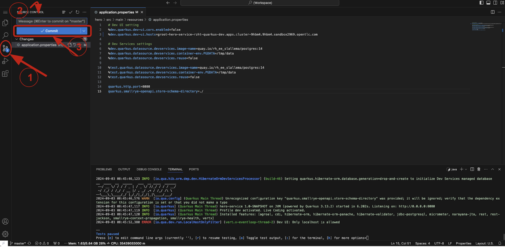
-
After committing, click the Sync Changes button to push your changes.
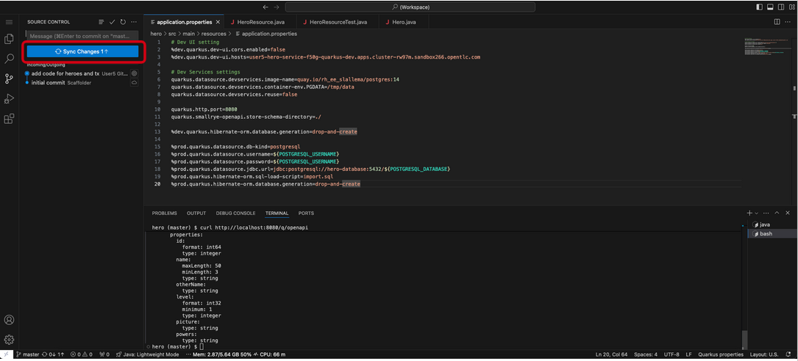
This action will trigger a pipeline, which you can monitor in the CI tab of the RHDH. Once the pipeline completes successfully, you will see the corresponding pod in the Topology tab. From there, you can access your Fight microservice by clicking on the pod.
👀 Observe 👀
Click the CI tab
Once you commit your code, an OpenShift pipeline has been automatically triggered. This pipeline was created automatically for your project when you instantiated the template.
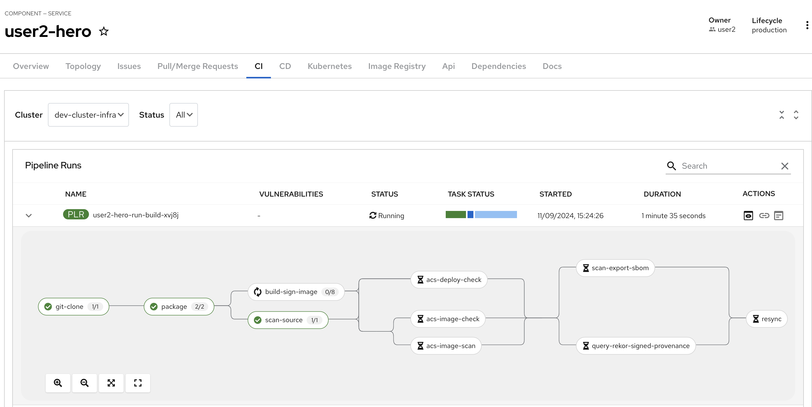
As you can see, a lot of steps are now running, so let’s explore a little.
The first step in the pipeline is a simple git clone. The next step is basically an mvn package and then running Sonarqube scan-source for static analysis. All pretty standard for CI pipelines. Get the code, compile/build the code, and run some scans.
build-sign-image
It is the build-sign-image where things get super interesting.
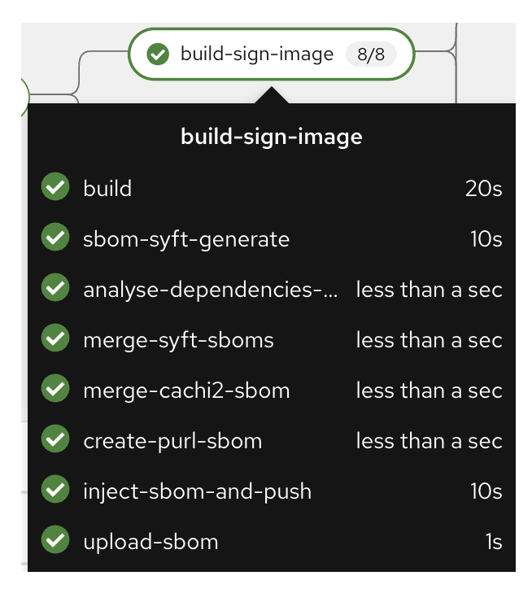
The template is leveraging Tekton Chains, a Kubernetes Custom Resource Definition (CRD) controller, that nicely augments the supply chain security within OpenShift Pipelines. This tool’s capacity to automatically sign task runs and its adoption of advanced attestation formats like in-toto and SLA provenance bring a higher degree of trust and verification to our processes. Tekton Chains works like an independent observer within the cluster; it signs, attests, and stores additional artifacts as OCI images alongside your container image.
Also, you can see we are using this step to automatically create an SBOM (Software Bill of Materials), which is a kind of ingredients list for your software.
More information regarding the pipeline can be seen in the next section [Trusted Application Pipeline](./trusted-apps.md)
Houston, we’ve got a problem
At this stage, you should observe an issue during the CI pipeline. The step acs-image-check (responsible of verifying that we are not violating any policies in our cluster) is now failing.
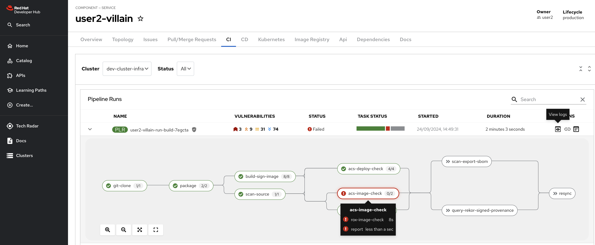
✍️ Time to pratice ✍️
Click the task to get the logs and understand what policy has been violated
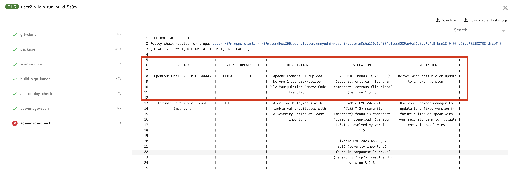
As you can see, it looks like a SuperFight has introduced a bad dependency in our code!
✍️ Time to pratice ✍️
Open the pom.xml file in DevSpaces IDE
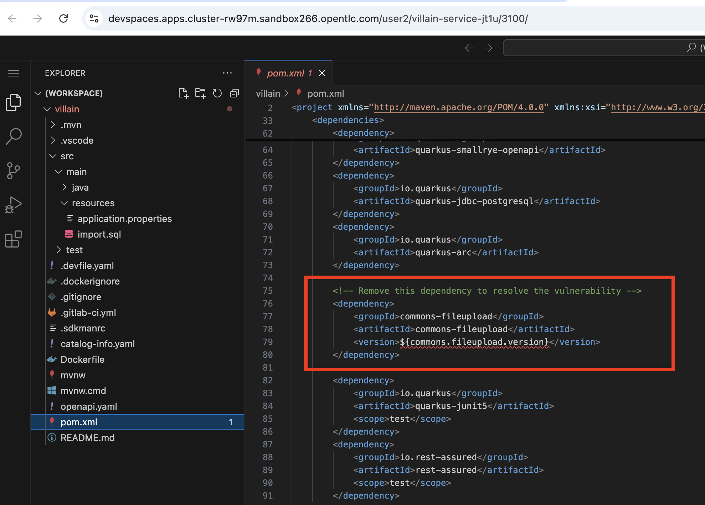
Thanks to the [Red Hat Dependency Analytics](https://marketplace.visualstudio.com/items?itemName=redhat.fabric8-analytics) IDE extension, you can even see that the dependency is automatically underlined, suggesting there’s an issue with it.
| Remove the dependency as it’s not needed in our code and not compliant to our security rules ! |
✍️ Time to pratice ✍️
-
Commit your changes
-
Push your commit
| The pipeline will run again! |
Click on Topology
This should look familiar to you if you regularly use the topology view from OpenShift.
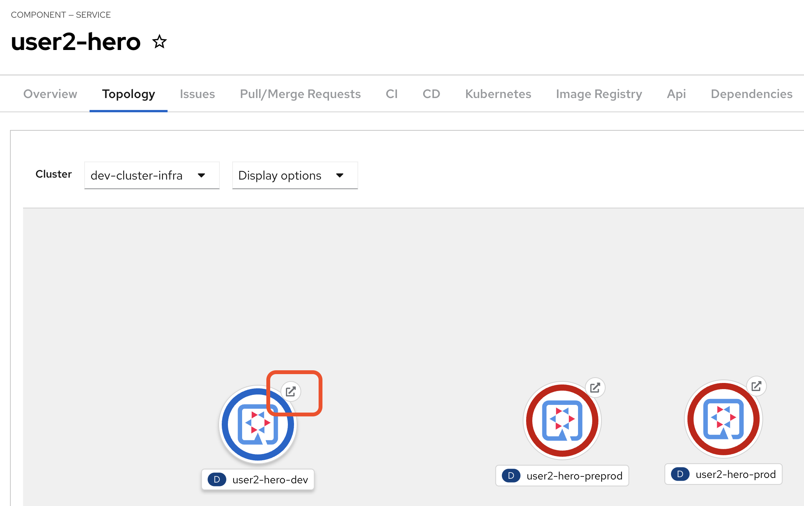
| Pre-prod and prod have NOT yet been deployed |
✍️ Time to pratice ✍️
Click the arrow. This will open a new tab on your browser showing your deployed Fight service!
Oops!! A Resource Not Found may be shown.
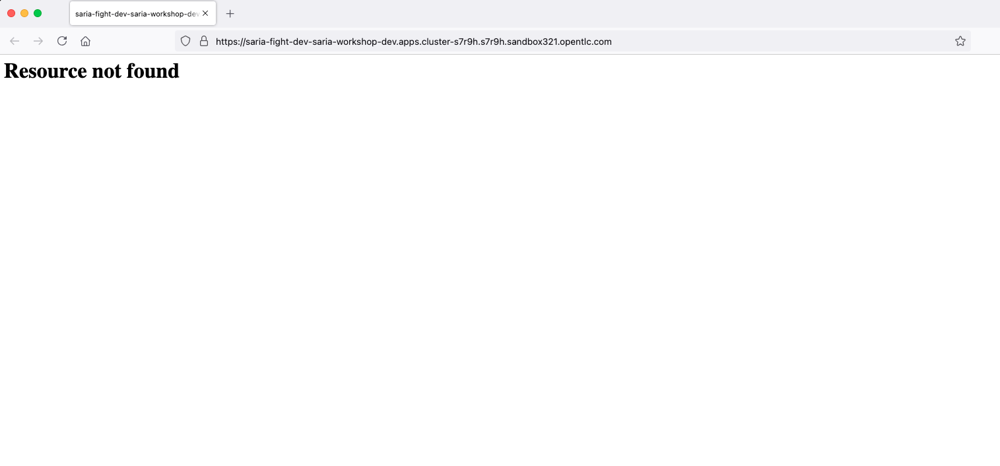
You can add /api/fight/hello, /api/fight/random, or /api/fight to the URL in your browser to attack the good endpoints and check your work
Note that during the deployment with OpenShift GitOps, we also automatically deployed the Database containing all the superheroes using the EDB Cluster CRD that automatically manages our database.
✍️ Time to pratice ✍️
First, access the GitLab UI, there is a convenient link on the "Overview" tab
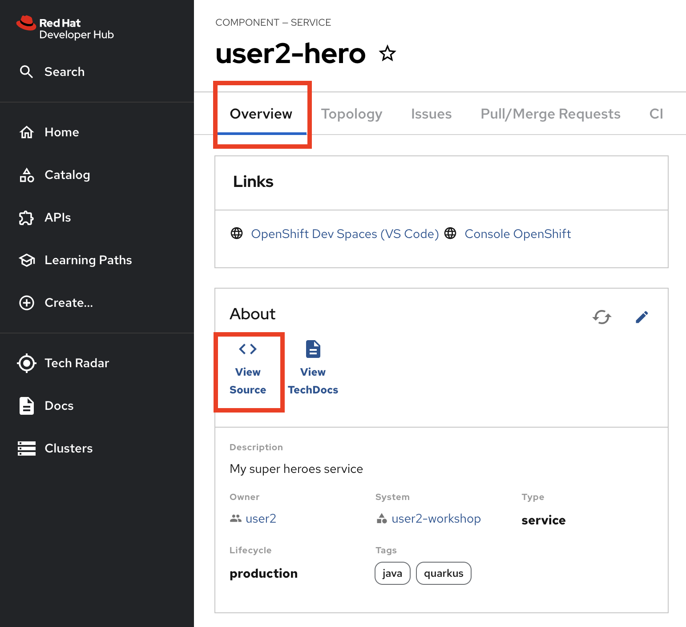
-
Click on Tags
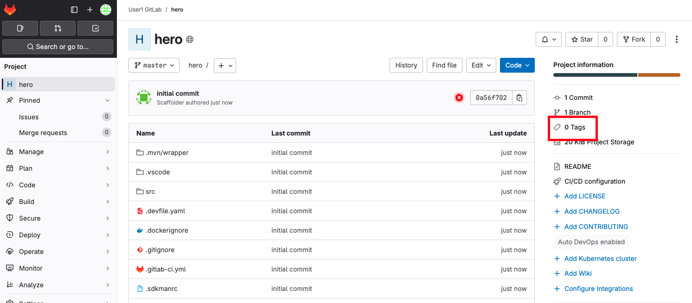
-
Click on New Tag
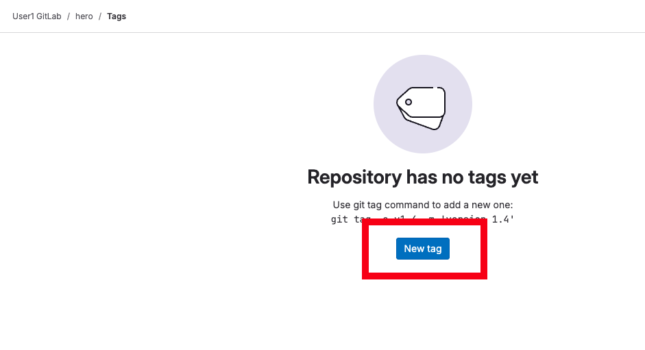
-
Give the tag a name like v1.0
-
Click Create tag
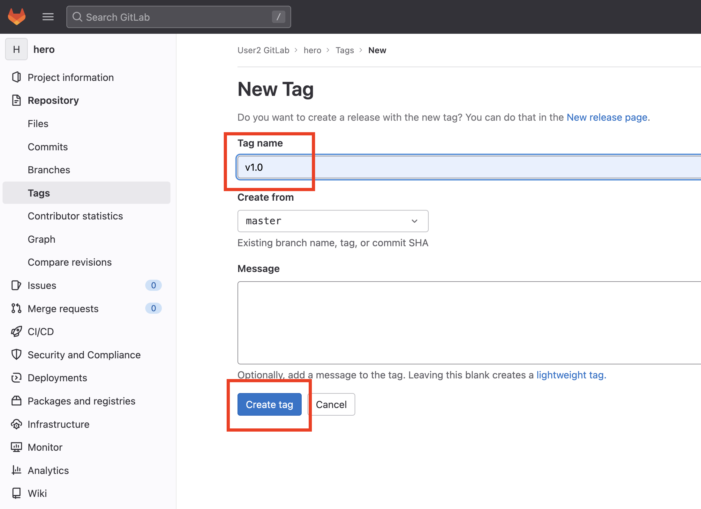
-
Back to the portal and the CI tab to see the promotion pipeline in action
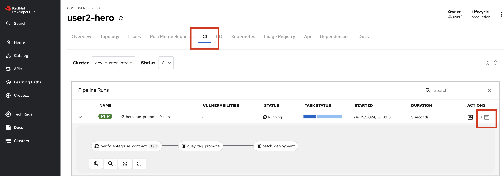
This pipeline has a special task called verify-enterprise-contract
Enterprise Contract (EC) is a special CLI that complements Sigstore’s cosign. If you remember the build-sign-image task that produced and stored the .sig and .att artifacts into the container registry, EC evaluates that signature and attestation. EC is based on the rego policy language from Open Policy Agent and allows you to create custom rules to review cosign attestations. By default, EC works with the SLSA provence attestation coming out of Tekton Chains.
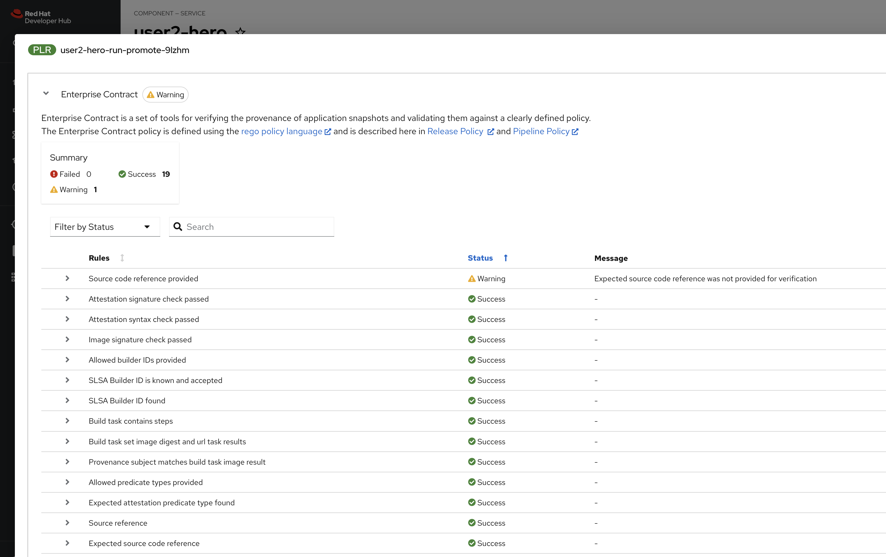
Enterprise Contract, as part of this promotion pipeline, is verifying that the container image did, in fact, come from the corporate standard/approved build system. In other words, this container image was not built on some random person’s laptop; it was built in the secure build system. The .att, .sbom, and .sig are stored alongside the container image, and a tool like skopeo can be used to move all items together.
[The Hitchhiker’s Guide](https://enterprisecontract.dev/docs/user-guide/hitchhikers-guide.html) is a particularly good way to get started understanding EC.
Once the release pipeline has completed, you can see that your application has been promoted to pre-prod and is available via the Topology plug-in.
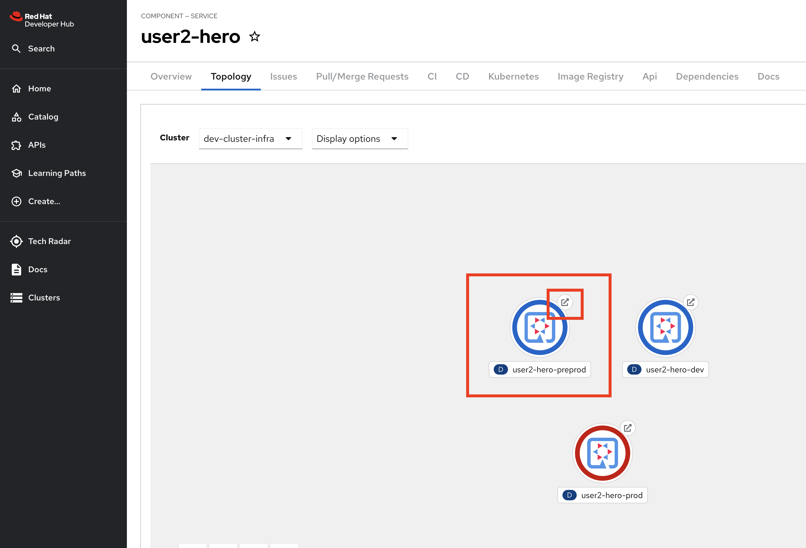
✍️ Time to pratice ✍️
-
Click on "Create Release"
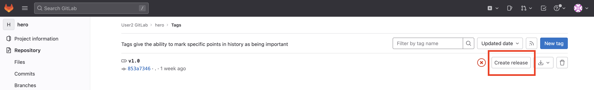
Give the release a title and click the "Create release" button.
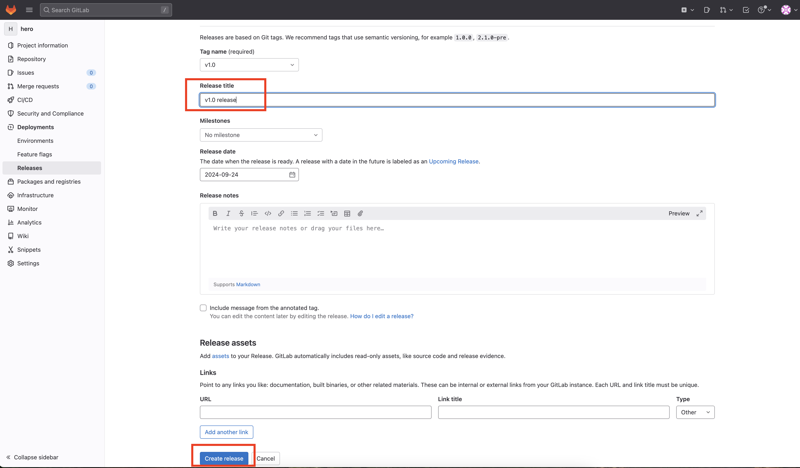
Another release pipeline will be triggered, and if the Enterprise Contract passes, then the container image will be promoted to production.
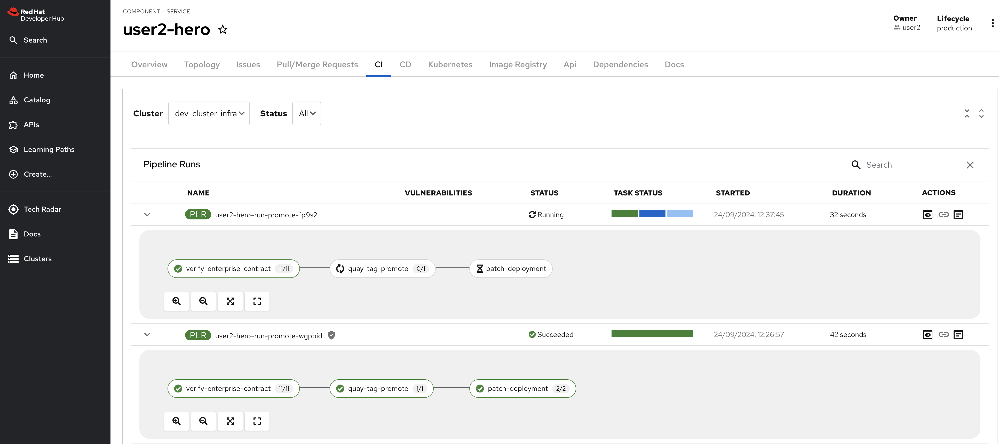
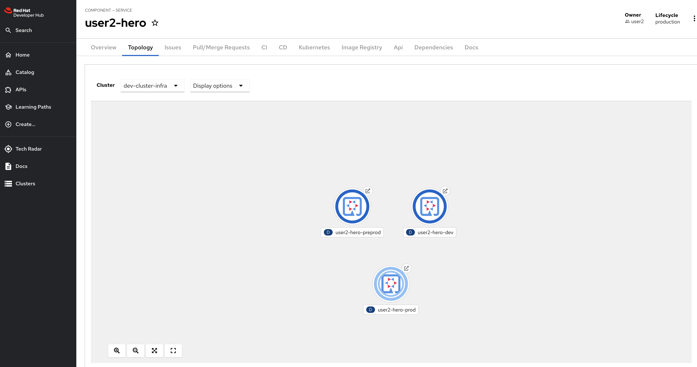
| Promotion to preprod and prod will be done for every service. Each team member accomplishes this step! |